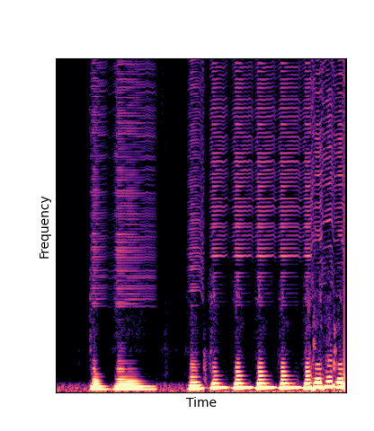
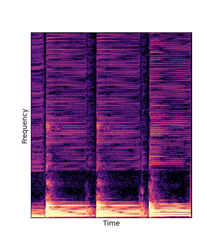
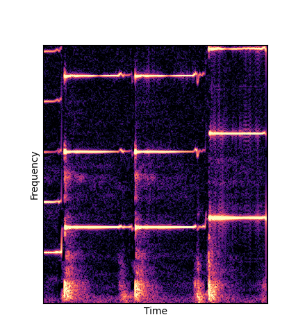

5.3 One shot learning and audio manipulations
Given only a single 4 second passage of saxophone from the URMP dataset, we train a new autoencoder model initialized with pretrained wavetables (DWTS Pretrain).
This model only outputs time-varying attention weights, since the wavetables are now a fixed dictionary lookup.
We compare against three base-lines:
(1) additive-synth autoencoder trained from scratch (Add Scratch)
(2) finetuning an additive-synth autoencoder pretrained on Nsynth (Add Pretrain)
(3) Wavetable-synth autoencoder trained from scratch (DWTS Scratch)
Saxophone
Note how DWTS Pretrain is the only method that does not produce any artefacts.
| Method | Original (no shift) | Pitch -3 octaves | Pitch -2 octaves | Pitch -1 octave | Pitch +1 octave | Pitch +2 octaves | Pitch +3 octaves |
|---|---|---|---|---|---|---|---|
| Additive Scratch |

|
||||||
| Additive Pretrain |

|

|

|

|

|

|
|
| DWTS Scratch |

|
 |

|

|
|||
| DWTS Pretrain |

|

|

|
|

|
--------
Piano
Note how DWTS Pretrain is the only method that does not produce any artefacts.
| Method | Original (no shift) | Pitch -3 octaves | Pitch -2 octaves | Pitch -1 octave | Pitch +1 octave | Pitch +2 octaves | Pitch +3 octaves |
|---|---|---|---|---|---|---|---|
| Additive Scratch |

|
||||||
| Additive Pretrain | |||||||
| DWTS Scratch |  | ||||||
| DWTS Pretrain |  |
One-Shot Pitch Manipulations compared with Librosa
Note how DWTS Pretrain able to preserve both percussive and harmonic components.
| Method | Original Sample | Pitch -3 octaves | Pitch -2 octaves | Pitch -1 octave | Pitch +1 octave | Pitch +2 octaves | Pitch +3 octaves |
|---|---|---|---|---|---|---|---|
Librosa.pitch_shift |
|||||||
DWTS Pretrain |